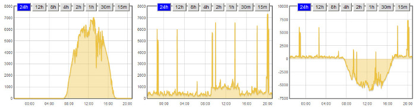
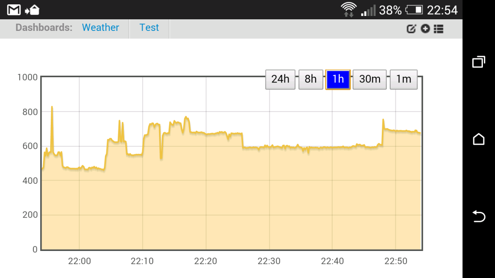

Hello everyone,
I thought I'd share some mods I made to the realtime.php module... (EmonCMS version 8.3.6)
I found myself clicking the one hour button every time I viewed my realtime graphs, so I changed the default window time span to one hour. I also found that I never used the 1 and 5 minute buttons, so I changed the button set to give me a choice of 15 minutes, 30 minutes, 1, 2, 4, 8, 12 and 24 hours. (makes it easy to get a quick look at how your system performed that day - see the screenshot below) In order to get all 8 buttons to fit inside the graph, I shortened the button text to m and h as applicable. When a button is clicked, the background and foreground colors change. In the attached example file, the colors are set to white on a blue background, but they can easily be changed to suit user preference.
I've commented the attached file to point out where to make the changes. Hope you find it as useful as I have.

Regards,
Bill
Re: Realtime visualisation mod - default window time span and button color
Nice work Bill, although emoncms has changed from 'solid' buttons to 'semi-transparent' to avoid obstructing the data, I can see the pro's & con's for both designs, and yours seem a reasonable compromise, as they are sited on the graph frame itself.
I personally would use the 1 minute interval (to view the energy bucket), but looking at the file it does not appear too complicated to personalize the time periods to whatever is required.
Paul
Edit - 22:58 10th Nov
In fact Bill, I'm finding your mod more practical and easier to use that the emoncms default, it makes the visualization easier to digest due to the button colour change, and renders better to mobile devices.

Paul
Re: Realtime visualisation mod - default window time span and button color
Thanks for the good words Paul, and for adding my screenshot to my post!
What I really want to do, but haven't figured out how yet, is to move the buttons outside the graph, like this: http://energy.johnmihalic.com/admin (I've sent John a PM, but haven't heard from him yet) If anyone else knows what code needs to be changed to accomplish the task, I'd be grateful for the help. To get the buttons to sit on the graph frame, all I did was change the "top" value to 0. (in the line immediately above the button definitions)
I'd forgotten about the energy bucket. I can see where using the one minute time span would make checking diverter operation quick and easy.
Bill
Re: Realtime visualisation mod - default window time span and button color
TBH Bill, I prefer your version.
It does not intrude into the data area too much, yet does not add much to the external dimensions of the graph.
John's data area is totally clear, but is diminished due to accommodating the buttons above, so not much has been gained.
Paul
Re: Realtime visualisation mod - default window time span and button color
John's data area is totally clear, but is diminished due to accommodating the buttons above, so not much has been gained.
I thought about that when I first started tweaking the code. The way the buttons have been moved now doesn't require a decrease in data area, and I was hoping to figure out a way to move them up another 20 pixels or so, which would make the overall graph a bit taller, but not require a decrease in the size of the data area.
But the way it is now works well, and for me, it was as much an exercise in code, as it was a useful mod.
Nice to hear you like it!
Bill